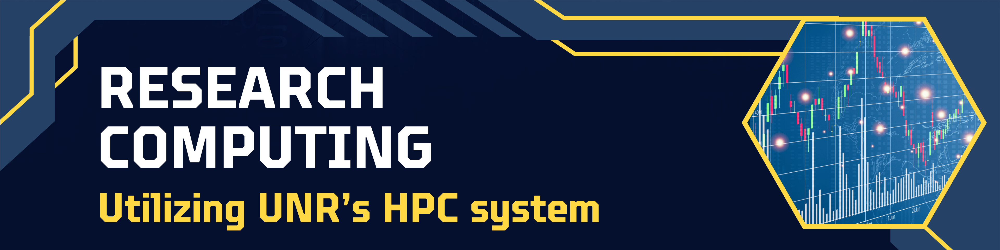

Interested in learning about Research
Computing?
Ever wondered how
advanced high performance computing can transform your academic and
research pursuits?
Want to
learn how to take advantage of local resources?
Discover the power of Pronghorn, the cutting-edge HPC system on UNR’s campus that could supercharge your research experience. Join us to embark on your journey from novice to HPC user in no time!
By the end of the workshop, you’ll master the installation of programs using Conda, conquer the HPC scheduler (SLURM) like a pro, write simple bash scripts and convert them to SBATCH submission scripts or SBATCH array scripts to allow for parallel processing. You will also learn how to run R Studio Server and Jupyter Notebook Server to keep using the analysis frameworks you are used to, while leveraging the computing power of our HPC!
Don’t miss out on this opportunity to level up your HPC skills.
During the morning session, we will ensure everyone is configured and can successfully access Pronghorn. We’ll also delve into the discussion of local computing resources and the group’s interest in Research Computing. Afterwards, our focus will shift towards mastering the UNIX file structure. We’ll cover all the fundamental commands required to efficiently navigate, interact with, and manipulate files.
This is an in-person training event to be held on UNR’s main campus; room information will be shared with accepted applications.
The workshop’s intended audience are graduate students, but everyone interested in utilizing HPC is welcome to participate. No prior programming or HPC experience is required.
All day Friday 4/19/24.
| Module | Time |
|---|---|
| Mastering Command-Line Basics & UNIX Fundamentals | 8:30am – 11:30pm |
| Creating Analysis Scripts & Navigating the SLURM Job Scheduler | 12:30pm – 4:30pm |
Space is limited, registration is due by April 12th, 2024. Late application might be considered if space is available.
#FFD844
In addition to the registration you need to onboard with UNR’s HPC pronghorn system.
Questions?? Reach out at any time, email nbc_training@unr.edu or call (775) 784-4359.
This event is part of the Data Science Initiative and made possible by a grant from the National Institute of General Medical Sciences (GM103440) from the National Institutes of Health.